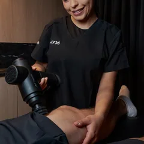
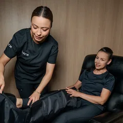

Ecatepec
Ecatepec PHYX a domicilio
PHYX a domicilio Preguntas frecuentes
Preguntas frecuentes Contacto
Contacto Valoración por fisioterapia
Valoración por fisioterapia Descompresión vertebral robotizada
Descompresión vertebral robotizada SIS, Sistema Super Inductivo
SIS, Sistema Super Inductivo Sensopro
Sensopro Redcord Neurac
Redcord Neurac Speediance
Speediance Presoterapia
Presoterapia Terapia de luz
Terapia de luz Cold plunge y contraste
Cold plunge y contraste Sauna infrarrojo
Sauna infrarrojo Cámara hiperbárica
Cámara hiperbárica Consulta de ortopedia
Consulta de ortopedia
Terapia de percusión
Presoterapia con LEDDescubre lo que una consulta rápida no ve
Una valoración a fondo de movilidad, fuerza y postura antes de cualquier tratamiento


 Lesión deportiva
Lesión deportiva